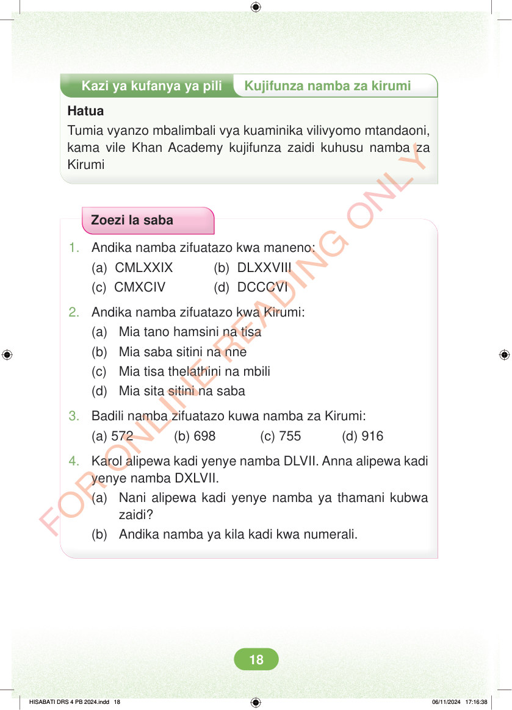

<!DOCTYPE html>
<html lang="sw-TZ"><head><meta charset="utf-8"><meta name="viewport" content="width=device-width,initial-scale=1">
<title>Hisabati: Kitabu cha Mwanafunzi Darasa la Nne</title>
<meta name="title-id" content="pg024_sec001"><meta name="page-section-id" content="24">
<link href="./content/tailwind_output.css" rel="stylesheet"><link href="./assets/libs/fontawesome/css/all.min.css" rel="stylesheet"><link href="./assets/fonts.css" rel="stylesheet">
<style>body{margin:0;background:#eef1ed}main{width:100%;display:flex;justify-content:center;padding:1rem 1rem 5rem;box-sizing:border-box}#content{width:100%;display:flex;justify-content:center}.pdf-page{position:relative;width:min(calc(100vw - 2rem),56rem);aspect-ratio:540.8980102539062/750.6610107421875;background:white;box-shadow:0 4px 24px #0002;overflow:hidden}.pdf-page img{position:absolute;inset:0;width:100%;height:100%;object-fit:fill}</style>
</head><body><main><h1 class="sr-only" id="page-heading">Ukurasa wa 24</h1><div id="content" class="opacity-0"><section role="article" data-section-type="pdf_accessible_page" data-section-id="pg024_sec001" aria-labelledby="page-heading" class="pdf-page"><p class="sr-only" data-id="pg024_gp001_tx001">Kazi ya kufanya ya pili Kujifunza namba za kirumi Hatua Tumia vyanzo mbalimbali vya kuaminika vilivyomo mtandaoni, kama vile Khan Academy kujifunza zaidi kuhusu namba za Kirumi Zoezi la saba 1. Andika namba zifuatazo kwa maneno: (a) CMLXXIX (b) DLXXVIII (c) CMXCIV (d) DCCCVI 2. Andika namba zifuatazo kwa Kirumi: (a) Mia tano hamsini na tisa (b) Mia saba sitini na nne (c) Mia tisa thelathini na mbili (d) Mia sita sitini na saba 3. Badili namba zifuatazo kuwa namba za Kirumi: (a) 572 (b) 698 (c) 755 (d) 916 4. Karol alipewa kadi yenye namba DLVII. Anna alipewa kadi yenye namba DXLVII. (a) Nani alipewa kadi yenye namba ya thamani kubwa zaidi? (b) Andika namba ya kila kadi kwa numerali. HISABATI DRS 4 PB 2024.indd 18 HISABATI DRS 4 PB 2024.indd 18 06/11/2024 17:16:38 06/11/2024 17:16:38</p></section></div></main><div class="relative z-50" id="interface-container"></div><div class="relative z-50" id="nav-container"></div><script src="./assets/offline-preloader.js"></script><script src="./assets/scorm.js"></script><script src="./assets/base.bundle.local.js"></script></body></html>